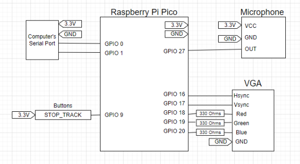

Introduction
To accomplish this, we utilized an FFT, designed a note categorization system, and used this system to generate corresponding MIDI messages that can be processed by a digital audio workstation. We also investigated the prospect of utilizing a machine-learning model to improve the note categorization process.
High-Level Design
Our project is split into three major parts: frequency identification, note classification, and MIDI conversion. In order to accomplish audio identification, we utilize a microphone and ADC converter to feed audio information into a fixed-point implementation of an FFT. The fixed point implementation was provided to us by Dr. Adams earlier on in the semester, however, we changed it slightly so that we could detect every peak instead of just one maximum frequency. From the output of the FFT, we implemented note classification which classifies bins from FFT that met certain conditions into actual music notes. In order for a sound to be classified, its respective bin from the FFT must reach a certain threshold, chosen by us through observation, so that we do not incorrectly detect and classify noise as a viable note. Additionally, the respective bin must be a peak, meaning it must have the largest magnitude in comparison to its neighbors. This requirement gives us the functionality to not make the mistake of classifying several notes at once.
Once those requirements are met, we can then actually classify the bins we have detected in our sound as notes. On startup, we populate a table full of notes and their respective frequency. In order to classify notes, we compare the frequency of the sound heard to those of the frequencies in the note lookup table. We do this by comparing the difference between the bin and each frequency in our lookup table iteratively, and retaining the index of the note which has the least distance between itself and the bin under examination. That index can then be used to return the actual note played and which octave it is played in.
Our next challenge was the implementation of MIDI. MIDI is a standardized protocol so that music can be played and edited through computers and various instruments. The way MIDI operates is by a series of events, which can range from copyright information to changes in time signature, but the ones we exclusively care about for the purpose of this project are note events, which play notes in the MIDI protocol. MIDI note events work by activating and deactivating a note, and in general MIDI events are timed by the change in time between MIDI events rather than the absolute time that has occurred in a song. Thus, in order to effectively turn a note into MIDI, we must be able to signal when a note is turned on or off, and keep track of the time between events, called delta time. Furthermore, due to the poor quality of our microphone, we wanted to implement a debouncing functionality, which would only allow us to convert notes heard to MIDI if and only if the note was heard on or off for more than a certain number of cycles. To accomplish this on the microcontroller, we had to implement a data structure that can hold values corresponding to whether the note had just been turned on or off, and how many sequential cycles the note had been held on or off. If a note passed through our debugging logic and was a rising or falling edge of a note, we would trigger the correct MIDI event.
Additionally, we needed a method to determine the delta time. To do this, we implemented a repeating timer interrupt that would increment a global variable that would correspond to the current time. An unexpected challenge was choosing how fast this interrupt should run. We needed the time to be accurate enough so that it could differentiate notes heard between subsequent cycles on the microcontroller, but not so fast that it would significantly increase our cycle time. The former issue was a slightly complicated matter. To determine how fast our cycle time was, we configured a GPIO pin to toggle every cycle. We then connected that GPIO pin to an oscilloscope and read the duty cycle to determine our cycle time. Ultimately we found that a timer interrupt running at 40kHz was optimal for our purposes. This delta time is important because it tells us the time between each note and how long a note is played. In contrast, resolving the latter issue was simple because we were able to utilize the Raspberry Pi Pico's second core to handle timing while devoting the first core solely to our music classification.
The last part to implement to get MIDI to work properly was to generate the header and track chunks of the MIDI file, which contains information about the song as a whole and the track that will be played. Unfortunately, it wasn't until deep into the project that we realized that MIDI track chunks are defined by their size, and thus we cannot easily add events to a track dynamically without a device specifically able to receive this information. Originally, we wanted to generate a MIDI file in real time but in order for a MIDI file to be successfully parsed with the tools available to us, it had to have more metadata given with the MIDI file than merely a series of note events. Thus, though our project is capable of streaming valid MIDI events in real-time, perhaps via MIDI packets, it cannot make a valid MIDI file in real-time due to the requirement to define the length. Essentially, to make the file, we would calculate all the MIDI note events in real-time and store them in an array of chars. Upon completion of the song, which occurs when the 'STOP_TRACK' pushbutton is pressed, we would append the MIDI file header and track chunks with correct information about the song that it just interrupted, as well as append the required end track event. We thus store MIDI information about the song we just played on the Raspberry Pi Pico that later can be turned into a readable MIDI file.
Hardware Design
Our final project consisted of very few hardware components because of the nature of the project. The only components required for our project to work are the microphone, the ‘STOP_TRACK’ button, and the serial communication port. The VGA display is used for debugging and verification purposes.
The microphone is utilized to acquire audio samples so that we can feed them through an FFT to analyze. The microphone we used was a simple and cheap Electret Microphone Amplifier. This device has an embedded amplifier, which is controlled by a potentiometer so that we tune it to change the sensitivity of the audio that is received. The microphone outputs an analog signal, which we feed to the ADC embedded in the Raspberry Pi Pico. Converting the audio output from analog to digital allows us to perform our fixed point FFT, which will give us the information to classify the sounds we hear as notes.
The ‘STOP_TRACK’ pushbutton is another very simple component that is used to tell the microcontroller when the audio track has ended and to send the generated MIDI to the computer to be stored in a file. It is tied to a GPIO pin, which we poll to check whether someone has pressed it. We use the Pico's UART serial's TX and RX GPIO pins to send the generated MIDI through serial UART communication to the computer.
Next, the VGA, although it is not a crucial part to make our final project run, it was very useful through the designing and implementation process to be able to verify our microcontroller is doing as we intended it to do. For example, we displayed our FFT, note classifications, the time between notes, and more on the screen so we can visualize our code.
Lastly, although they are not shown in the figure above, we added some measures to reduce the noise coming from the microphone to improve our audio detection. First, we made sure our wires connected to the microphone were as short as possible to reduce the amount of inductive coupled electromagnetic interference. Additionally, we added a small sheet of metal, connected to the board's ground, underneath our project to reduce the noise generated by the microcontroller. Placing the sheet of metal underneath everything almost completely eliminated the low-frequency noise, generated by the Pi Pico, that was affecting our microphone. This allowed us to classify notes of very low frequency, which we were not able to do before these changes.
Software Design
One of the challenges of our project was to be able to listen to and classify audio in real-time. This means that our cycle time, or the time between each analysis of the recorded audio, must be short enough so that we never have loss in the audio. To reduce our cycle time, we utilized a fixed-point FFT, which is significantly more efficient than its equivalent floating-point FFT. Additionally, our note classification logic, which would compute the distance between standard note frequencies, was implemented in fixed-point. The utilization of the fixed-point arithmetic does result in some inaccuracy in calculations, but it ultimately did not have a significant or noticeable effect on the overall outcome. We verified it by playing pure tones across a wide range of frequencies and verified that we computed the expected frequency and we matched it to the corresponding note.
To classify notes, we utilized a simple loop that would measure the distance between our sample frequency and the frequencies of notes. Because we generated a fixed-point FFT, we are able to perform fixed-point math for this distance calculation and quickly categorize many notes. We are theoretically able to stream these MIDI events directly into a receiving device, but we did not have a device to receive this information as that was outside of the scope of this project. We instead pivoted to generating a MIDI file, which required us to retain information about the MIDI events and output these events at the end of the song, in order to properly size the track chunk that describes what was detected and to add some required metadata about tempo and time signature to make the file playable by the players we used to ensure functionality.
In a more refined implementation, we would have preferred to tailor our metadata to work better with whatever system we were sending our MIDI file to. Initially, we sought to use another form of timing known as SMPTE timecodes, however, we found this format to not play so nice with the MIDI file editor we were using. If we had more time to refine the timing, we could have selected a header delta-time definition that is more suited to the real-time pace we can generate music at. MIDI’s default timing offset utilizes a metric of ticks per quarter note as opposed to SMPTE timing’s more real-life-friendly metric of ticks per frame.
Conclusions
When we originally set out on this project, we planned to have a better classification of audio. Specifically, we wanted to train an ML model so that we could accurately predict notes played by more complex instruments such as a guitar or piano as opposed to the recorder, which outputs audio as pure tones. Unfortunately, training the model and placing it on the Pi Pico was too ambitious of a project for the four weeks we were presented with. Ultimately, our project worked successfully with the classification of pure tone instruments like a recorder or flute, and the generation of a valid MIDI file.
Things that we could have done to improve our project would be the addition of an ML model as explained in the Machine Learning section. Besides using an ML model, we could have used a cepstrum approach to audio processing or implemented a method to ignore harmonics which were sometimes present in our FFT.
Furthermore, we could have taken a different approach and turned our Pi Pico into a MIDI output device. Given that MIDI is essentially a binary representation of music, we could have configured the Pico to stream MIDI through a GPIO port so that an instrument that takes MIDI as an input could use the Pico to play music. Outside of ECE 4760, we plan to take our project even further by conducting more research to get the ML model to actually work.
Live Demo
Machine Learning Exploration
Overview
While the note classification in our final design at the time of submission only uses a (comparatively) simple short-time Fourier transform, this was by far not the intended outcome. While one part of our group was working on the MIDI generation aspect of the project, the other was concurrently researching and attempting to implement a real-time machine learning model for pitch classification, with the goal of deploying it on the RP2040 in tandem with the MIDI generation code. Unfortunately, while a large amount of time was invested and an equally large amount of progress was made, it was ultimately far too ambitious for the four-week time frame allotted. However, we are confident in the direction of this work, and plan to continue developing it outside of the class. This portion of the report will discuss this aspect of the project in detail: specifically, the motivation, research results, implementation results, reflections, and aims for continuation/future development.
Motivation
The original aim for this project was not MIDI conversion, but instead to explore the RP2040 as a platform for real-time audio classification (the MIDI aspect was decided on later as a potential application). The inspiration for the project came generally from a TinyML talk on using the RP2040 as a real-time inference platform (https://www.youtube.com/watch?v=xTI4UeEOzkY), and specifically from a TensorFlow article by ARM demonstrating real-time detection of fire alarms (https://blog.tensorflow.org/2021/09/TinyML-Audio-for-everyone.html). As musicians, we had a strong interest in trying to extend this idea to a musical concept that we (and others) would find personally useful. Some initial ideas involved chord classification and bassline generation, but we ultimately decided on MIDI conversion. We made this decision mainly based on believing MIDI conversion to be a more reasonable goal that would involve significant development outside of the machine learning model and more importantly, does not entirely rely on the model being completed to work. Specifically, the aim was to develop a model that could take in a spectrogram (from our STFT) and return an array of predicted notes for the MIDI conversion code to post-process. We figured that this task might be well suited to a convolutional neural network, as it could theoretically learn to extract features allowing it to differentiate between fundamentals, harmonics, and noise, enabling more accurate polyphonic detection (detecting multiple pitches simultaneously) than if we were to only use our STFT. This structure also allowed us to fall back on the STFT when it was clear we would not have enough time to complete a model.
Beginning Development
The two main requirements for implementing the model were first, to build and train the actual model using TensorFlow, and second, to convert and deploy the model using the Pico port of the TensorFlow Lite Micro (TFLμ) library (i.e., the Pico-specific microcontroller port of TensorFlow). To learn and become familiar with both of these steps, we began by following the previously mentioned TensorFlow/ARM article and its included Jupyter notebook. Using this, we were able to successfully reproduce the fire alarm detection model and deploy it on our Pico. From this example, we were able to understand and experiment with the main steps required for deploying a model on the Pico: First, building and training the model with TensorFlow, and (more importantly) second, converting the model to a format deployable on the Pico. Specifically, to run the model on the RP2040 it needs to be compiled and stored with the rest of the program in flash, meaning it needs to be converted to a C/C++ header or source file. Converting a saved TFLμ model into a C header can be done trivially by using a hexdump tool (e.g. using xxd command) and ensuring the resulting output is stored in an unsigned character array. However, before the saved model file can be converted, the model itself must first be quantized. While TensorFlow allows for varying degrees of quantization, for our purposes of deploying a model to run in real-time on a microcontroller without a dedicated floating point unit, all floating path math in the model needs to be quantized to integer operations. Specifically, to be compatible with the optimized ARM CMSIS-NN kernels used by the Pico TFLμ port, all variables must be quantized to 8-bit integers. The final step is writing a program to actually run the model on the Pico. In our case, for feeding the model output to the MIDI generator we would ideally only have to re-use the peak picking code from our STFT. From here, the next goal was to develop the actual model we were going to use. While the fire alarm example gave us a knowledge base with which we could begin to build our own from scratch, we also recognized that this was definitely not the first time anyone has thought of applying deep learning to pitch identification, and that we should instead try to build on whatever existing knowledge was available. We also believed that converting and/or building off of a pre-existing model with proven performance would be more interesting, allow us to achieve a higher quality end result, and better serve our time constraints.
Research Results
Research Results: From the very beginning of our research effort it was immediately clear that even monophonic pitch detection is a very non-trivial problem. While pitch tracking can be found across many different audio classification tasks and contexts, for the application of MIDI conversion it is best categorized as an automatic music transcription (AMT) problem. AMT is itself considered a small subset of the much larger field of music information retrieval (MIR). Within these fields, our goal of polyphonic pitch detection is often referred to as multipitch estimation (MPE) or specifically multi-f0 pitch tracking (where f0 refers to fundamentals). As predicted, the use of deep learning for both MPE and MIDI conversion has seen a large amount of (successful) exploration in recent years. In particular, one approach that has gained traction in recent years is to train models to identify pitch “salience.” Salience (with respect to pitch) is defined as a measure of how identifiable/prominent/distinguishable a pitch would be to a human listener, and is influenced by a multitude of factors including but not limited to volume and timbre.
Appendix
- The group approves this report for inclusion on the course website.
- The group approves the video for inclusion on the course youtube channel.
References
- Source used for our MIDI file generation
- Hunter Adams' ECE 4760 course site
- "A Lightweight Instrument-Agnostic Model for Polyphonic Note Transcription and Multipitch Estimation"